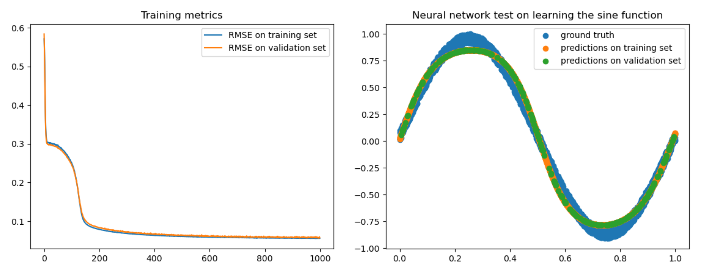

October, 2023
Neural Network from scratch
Overview
Created a fully connected neural network form scratch in python using numpy. Hyperparameters are fully configurable by the user, who can set the number of layers and number of neurons per layer, number of inputs and outputs, and more.

Neural Networks
In this project a subset of neural networks is implemented -feed forward, fully connected networks- using perceptrons as the units for computation and learning. The perceptron is a unit which takes n inputs, performs a linear combination of them, this result is then fed through an activation function, and at the end gives a single output. A representation of a perceptron is presented in Image 1.

The linear combination is done using weights, which are learnable parameters of the perceptron, and a bias -which
is also a learnable parameter- is added to the result. The bias can either be seen as a weight multiplying a fixed input
of 1, or as a number added to the linear combination. The “learning” on a perceptron involves adjusting the set of
weights and biases to minimize the error between the output of the perceptron and a target output for a set of given
inputs.
The role of the activation function is to add nonlinearity to the behavior of the perceptron. Functions such as
sigmoid, rectified linear units (ReLU), or hyperbolic tangent are widely used as activations for perceptrons.
While a single perceptron is capable of learning simple problems, a combination of multiple perceptrons is needed
to allow for learning complex nonlinear functions. Perceptrons can be stacked vertically (one layer with multiple
perceptrons) and horizontally (multiple layers, where the output of the previous layer is fed as input to the next
layer), to form networks with varying architectures. A visual representation of a multilayer network as the one
mentioned is shown in Image 2.

The network depicted above consists of fully connected layers, meaning that each output of a layer is fed to every input of the next layer. Each big circle is a full perceptron as previously explained. This is the variation of neural networks considered for the scope of this homework. The first layer is usually referred to as an input layer and consists of the inputs being fed into the network. Subsequent layers are called hidden layers, except for the last one, which is referred to as the output layer. In this case, the network has n inputs and a single output, but this is configurable to accommodate any combination of m inputs and n outputs.
Gradient Descent & Backpropagation
The basis for minimizing the error -or fitting the network- is gradient descent. The network begins training with an
arbitrary state, and gradient descent is the search algorithm that allows finding a set of weights that minimizes the
error by iteratively updating the set of weights a small amount according to the gradient of the error surface.
One variant of gradient descent is stochastic gradient descent, where instead of calculating the error for all training
examples and then updating the weights, the error is calculated, and weights are updated for each sample.
Gradient descent provides a direct way of optimizing the weights for a layer. But in the case of multilayer networks,
we need a way to propagate the update of weights to all layers. Backpropagation is an algorithm that provides a
way of updating all weights in a network while using gradient descent to optimize. The goal of backpropagation is
to minimize the error between the target values and the actual outputs.
Implementation
The implementation was performed using object-oriented programming in python. A class named FCLayer
represents a fully connected layer, including its weights and biases, the activation function and the derivative of the
activation function which is used for backpropagation. A class NN represents the neural network and stores a list of
layers. It provides methods for training the network using backpropagation and performing inference.
A summary of parameters that are relevant for training:
Results
The implemented network is tested with the goal of learning a noisy sine function. This single-input-single-output problem is on the simple end of functions that a neural network can
learn, but it is a good check to see if the network learns. It was extensively used while developing the algorithm for
fast, simple checks.

Random values were generated in the range [0,2𝜋], shuffled and passed through a sine function. Gaussian noise
was added to the results of the sine function. The generated values were then normalized to the range [0,1]. A part
(15%) of the generated samples was set aside for validation/evaluation. The model was then trained on the remaining
85% of the generated samples. The evolution of error over training and a plot of predictions on both training and
evaluation sets are shown in Figure 3.
In this case, several configurations were tested, and the final one proved to strike a good balance between low
overfit, fast training time and overall low error. The model used consists of three layers, two of 20 neurons, and an
output layer of 1 neuron. The learning rate used was 0.1, momentum was left default at 0.6. Batch size used is 64
samples.